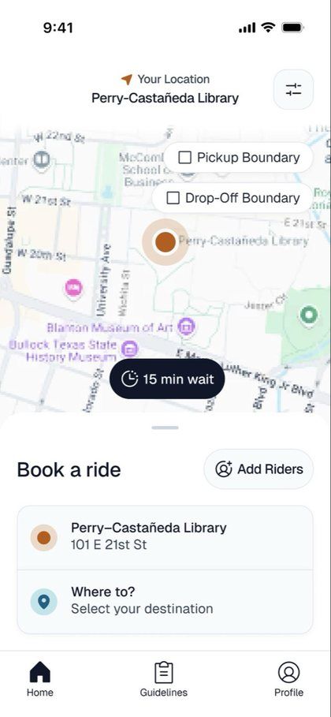
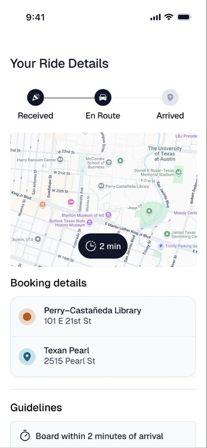
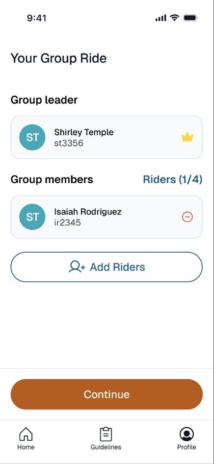
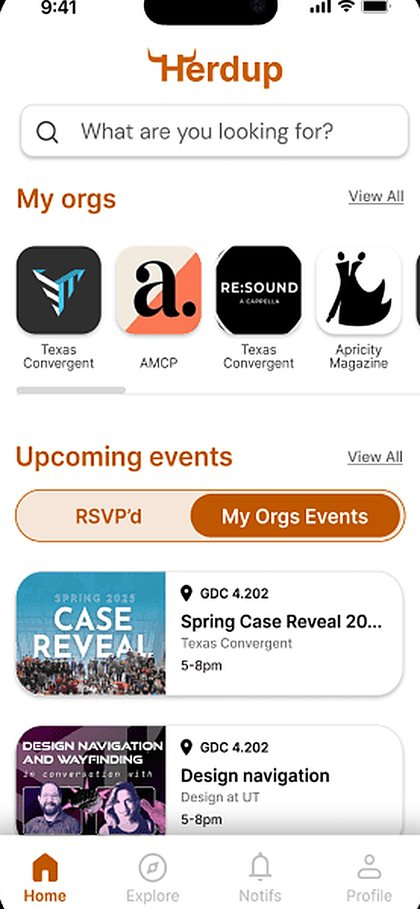
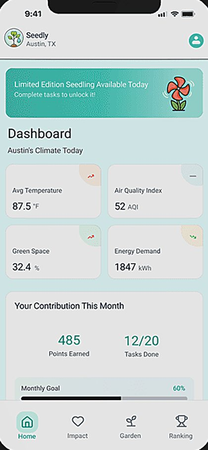
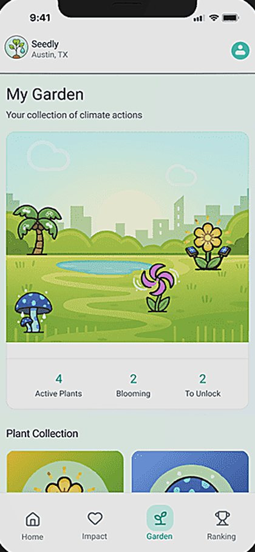
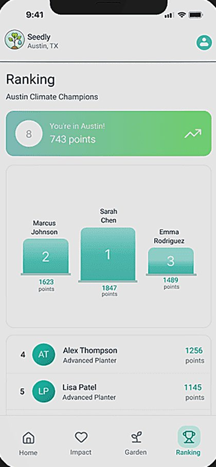

I design intuitive, user-centered experiences by digging into the research, both the hard data and human stories, to solve complex problems.
Selected work
04 projectsSure Walk App
Designing a mobile app for Sure Walk, UT’s late-night safe-ride service, to replace its Google Form with clearer requests and real-time ride status for riders and staff.
32 survey responses · 7 interviews · dispatcher observations · in progress



HerdUp App
A mobile app for HornsLink, UT’s student organization platform, that connects students with clubs, events, and involvement opportunities tailored to their interests.
Surveyed UT students · 3 usability tests · designed the MVP

Seedly
Seedly turns climate awareness into everyday action by helping users build sustainable habits. It replaces abstract data with a growing digital garden that visualizes impact, making progress tangible and motivating continued engagement.
Excellence in Innovation Award · 12+ teams · 24 hours



Longhorn Life Sciences (LLS)
iDetect helps discharge nurses keep an eye on patients’ wounds after they go home, designed with Texas Convergent for Longhorn Life Sciences.
Under NDA. Email me at sheenavaghela@utexas.edu for the password.
4 nurse interviews · usability tested with 5 nurses